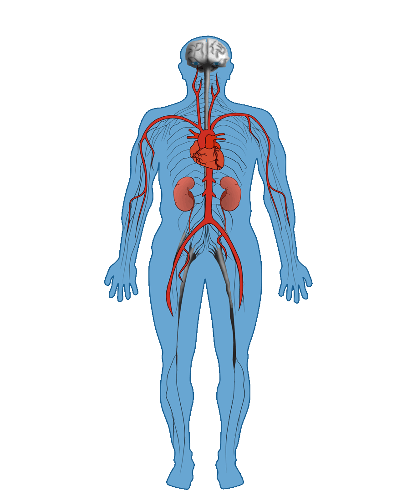

What is diabetes?
 Diabetes is a chronic condition characterised by high levels of glucose in the blood. These high levels are caused by the pancreas being unable to produce enough insulin, by the body becoming resistant to insulin, or by a combination of the two. Insulin is a hormone made in the pancreas which is released into the blood stream and helps move glucose from the food we eat to our cells for energy.
Diabetes is a chronic condition characterised by high levels of glucose in the blood. These high levels are caused by the pancreas being unable to produce enough insulin, by the body becoming resistant to insulin, or by a combination of the two. Insulin is a hormone made in the pancreas which is released into the blood stream and helps move glucose from the food we eat to our cells for energy.
Effects of Diabetes
Many effects of diabetes will only develop after 6 months or more of high levels of blood glucose. Diabetes can lead to major complications including blindness, heart disease, stroke and kidney failure.
The following interactive tool will help explain what diabetes actually is and how it affects different parts of the body
Symptoms of Diabetes
Frequent Urination
Increased Hunger and Thirst
Fatigue
Lack of Interest and Concentration
Blurred Vision
Tingling Sensation in Hands or Feet
App
Click on a body part to learn how it relates to diabetes

Management & Control
Foods |
Most food and drink will naturally increase blood glucose levels, some more than others. In order to maintain a good balance, there is an emphasis on healthy eating and a well balanced diet. Lollies or sweat drinks will cause glucose levels in the blood to rapidly rise, so should be avoided. Foods containing carbohydrates will also have an effect on glucose levels. Therefore, it is important to note down what foods are eaten throughout the day and how much carbohydrates they contain. |
|---|---|
Medication |
Scheduled does of Insulin, and other medications, help lower glucose levels. They should be taken around meal times, in order to avoid glucose levels going too low. Dosage differs from person to person and can depend on your diet. |
Stress |
Stress will cause an increase in blood glucose levels. Being in highly stressful environments may make managing normal levels, difficult. Keeping track of stress and closely monitoring the affect it has on glucose levels, is important. |
Exercise |
Regular scheduled exercise, will help to reduce blood glucose levels, as well as keeping you fit. This is due to your body converting glucose to energy. The longer or more intense the exercise is, the greater the effect it has on lowering glucose levels in the body. |
Planning |
Keeping a regular schedule of all of the above, and sticking to it, is important to keeping blood glucose levels under control. This includes keeping track of levels throughout the day, as well as monitoring stress, foods eaten and exercise times. Planning ahead is also crucial. As unexpected events like very low glucose levels, can occurr. Small amounts of sweats or sweat drinks, can be eaten if the body’s blood glucose level drops unexpectedly low. Alternatively glucose tablets can be taken. Keeping either with you, during exercise sessions or when going about daily activities, helps to accounts for situations where it is needed to quickly bring low blood glucose levels back up to normal levels. |
Princess Margaret Hospital
We are committed to the pursuit of healthier lives for children and young people.